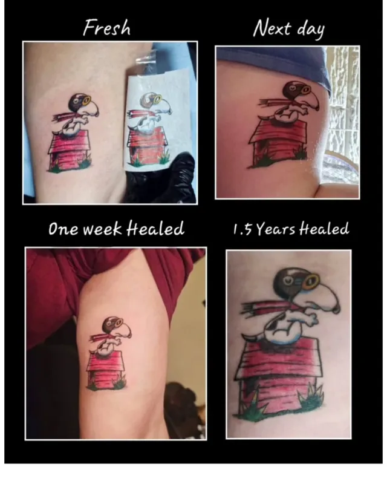
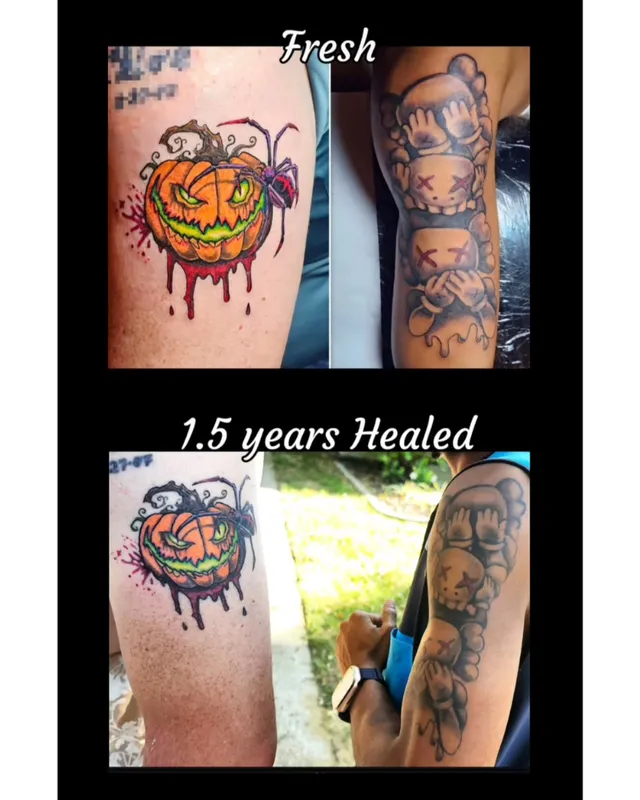
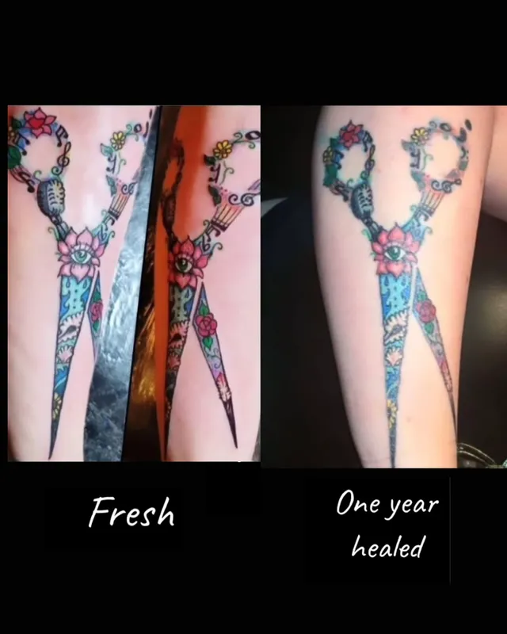
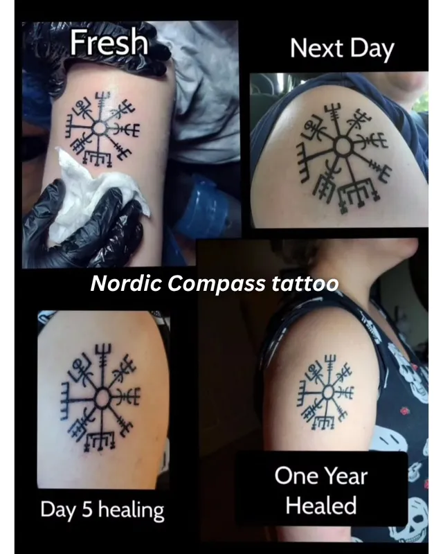
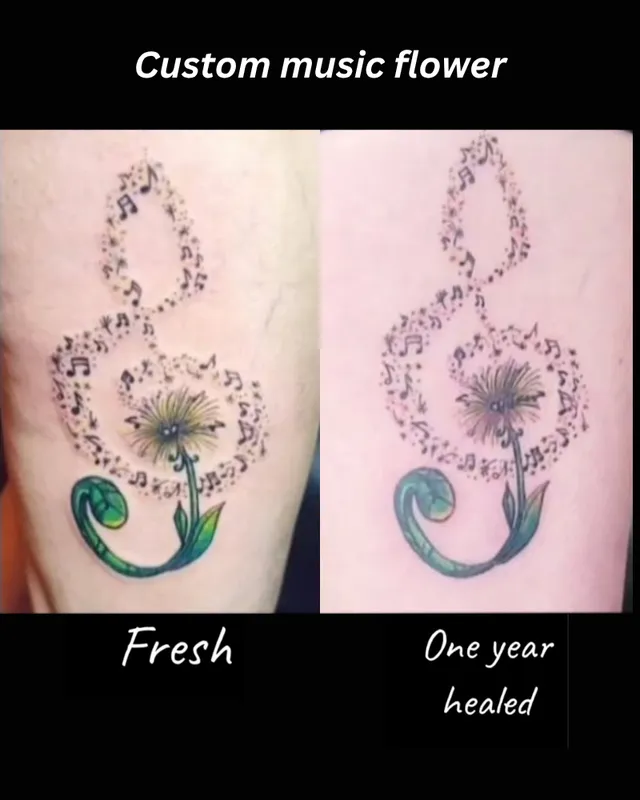
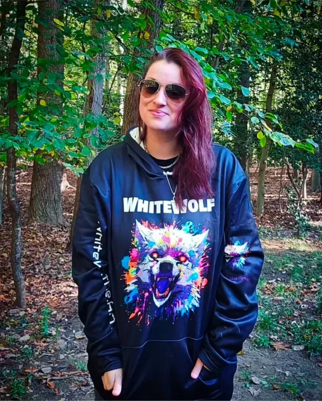
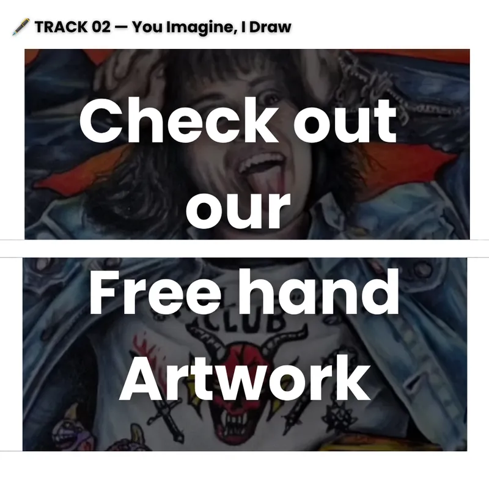
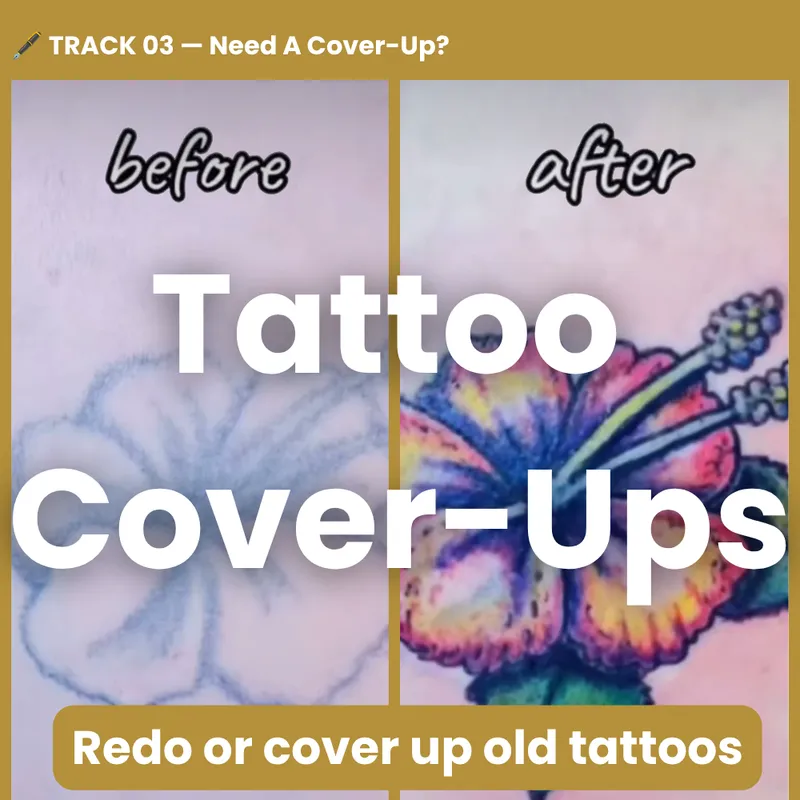

You Imagine I Create
Fresh Vs. Healed Tattoos:
What a tattoo looks like right after it's done can be very different from how it looks after it's healed.
These side-by-side photos show both, so you can see the real, lasting quality of our work.





What Clients Are Saying
Real words from real people.
Got Questions? I've Got You.
Real answers. No stress.
Is the tattoo ink you use safe?
Absolutely! As a tattoo artist, my rule is:
"If I can't eat it, I won't ink it." Our ink is all natural organic gluten-free ink. Guaranteed a clean experience.
Can I bring my own design or idea?
Yes, please do! Bring a sketch, a photo, or even just a feeling. I'll turn it into a one-of-a-kind design that's made just for you. You imagine, I create.
How do I know if this is right for me?
If you've been thinking about a tattoo for a while, that's a good sign. Take your time, look through my work, and see what speaks to you. Not sure yet? Send me a message. There's no pressure, just a friendly chat about your idea.
Does getting a tattoo hurt?
A little, but it's usually less than people expect. Most say it feels like a scratch or a light sting. Some spots, like ribs or feet, feel more than others. We can take breaks anytime, and I'll check on you the whole way through.
What if I have sensitive skin or allergies?
Tell me before your appointment so I can plan for it. Your comfort and safety come first. If you have a skin condition or allergies, it's a good idea to check with your doctor before getting tattooed.
How much does a custom tattoo cost?
Every piece is different, so the price depends on the size, detail, and placement. Send me your idea, and I'll give you a free quote. No surprises.
Is there a deposit?
Yes. A deposit holds your spot and goes toward the final price of your tattoo. Deposits are non-refundable, but you can move your date if you give me at least 48 hours' notice.
How do I book?
Send me a DM on Instagram at @whitewolf.the.artist. Tell me your idea, where you want it, about how big, and add any photos that inspire you. I'll take it from there!
Do you take walk-ins, or is it by appointment only?
I work by appointment, so every client gets my full time and attention. If an open spot comes up, I'll post it on Instagram.
Do you tattoo minors?
No. You must be 18 or older and bring a valid photo ID to your appointment.
How do I prepare for my tattoo appointment?
Get good sleep, eat a full meal, and drink lots of water before you come in. Skip alcohol for 24 hours before. Bring a snack and a drink, and come ready to relax.
What should I wear to my tattoo appointment?
Wear comfy clothes that make it easy to reach the spot we're tattooing. Dark clothes are best, since ink can sometimes get on them.
Can I bring a friend to my appointment?
Yes, you can bring one friend for support. Just let me know ahead of time so I can make room.
Is tipping expected?
Tips are never required, but always appreciated. Many people tip about 15 to 20 percent if they love their tattoo.
How should I take care of my new tattoo?
I'll give you simple aftercare steps before you leave. The basics: keep it clean, wash it gently with unscented soap, add a thin layer of unscented lotion, and don't pick or scratch it. Keep it out of the sun, pools, and baths while it heals.
How long does a tattoo take to heal?
The top layer of skin usually heals in about 2 to 4 weeks. Deeper healing can take a few months. Everyone heals a little differently, so be patient and follow your aftercare.
Can I work out after getting tattooed?
Take it easy for the first few days. Lots of sweat and rubbing can bother a new tattoo. Light activity is fine, and you can get back to your normal routine as it heals.
Do you do touch-ups?
Yes! I want your tattoo to look its best for years. If you need a touch-up within 3 months of your appointment, it's on me. I've got you, even after you leave.
Wanna talk about your idea?
YES! I wanna talk about my idea! 😍Your message goes straight to me on Instagram 👇
Your tattoo should be personal and meaningful.

Wanna see more?

